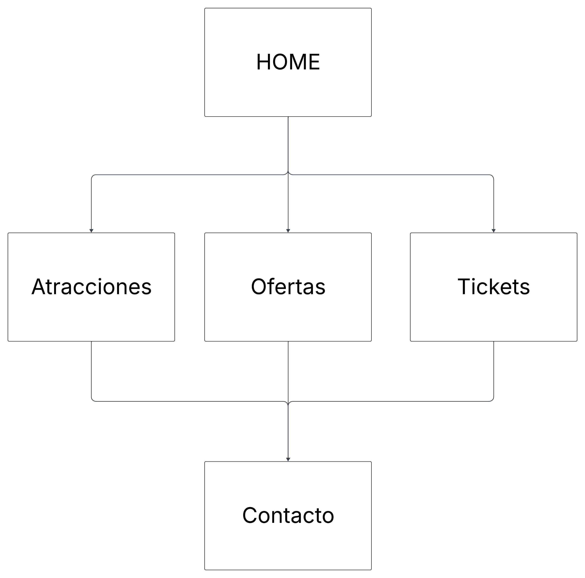

Avances del Proyecto: Pagina para un parque tematico
Cliente: El cliente es un empresario que desea crear un parque temático en un lugar turístico popular. El objetivo es atraer tanto a familias como a jóvenes, ofreciendo una experiencia divertida y accesible para todos.
Público Objetivo:
- Familias: Padres con hijos pequeños y adolescentes.
- Jóvenes: Grupos de amigos y parejas jóvenes.
Requisitos del Sitio Web:
- Información General del Parque
- Descripción del parque temático.
- Ubicación y mapa interactivo
- Historia y misión del parque.
Horarios y Días de Apertura:
- Calendario de apertura con horarios detallados.
- Información sobre días festivos y eventos especiales.
Compra de Tickets:
- Sistema de compra de tickets en línea.
- Promociones y descuentos especiales (ej. descuentos familiares, promociones para grupos de jóvenes).
- Opciones de pago seguras y variadas.
Accesibilidad:
- Información sobre accesibilidad para personas con discapacidades.
- Diseño inclusivo que refleje la accesibilidad (ej. botones grandes, texto claro, contraste adecuado - modo oscuro).
Atracciones y Actividades:
- Descripción de las atracciones principales.
- Información sobre actividades y espectáculos.
- Galería de imágenes y videos.
Servicios Adicionales:
- Restaurantes y tiendas dentro del parque.
- Servicios de alquiler (ej. sillas de ruedas, cochecitos para niños).
- Información sobre estacionamiento y transporte.
Diseño Sitio Web:
- Estilo Visual: Colorido y atractivo, reflejando la diversión y emoción del parque.
- Navegación: Intuitiva y fácil de usar, con menús claros y accesibles.
- Responsivo: Adaptable a diferentes dispositivos (móviles, tablets, computadoras).
- Interactividad: Elementos interactivos como mapas, galerías de fotos y videos, y formularios dinámicos.
Paleta de colores
#EF233C
#FFD100
#2B2D42
#F62A66
#58AB54
Objetivos del Sitio Web
- Atraer Visitantes: Proveer información completa y atractiva para motivar la visita al parque.
- Facilitar la Compra de Tickets: Ofrecer un proceso de compra sencillo y seguro.
- Promover la Inclusión: Asegurar que el sitio sea accesible para todos los usuarios
- Mejorar la Experiencia del Usuario: Proveer una navegación fluida y recursos útiles para los visitantes
Mapa del Sitio
- Header: Siempre visible y accesible, donde se mostrara en que seccion se esta navegando, con posibilidad de cambiar el sitio a modo oscuro
- Footer: Mostrará los datos solicitados (logo de UADE, integrantes del grupo)
- Home: Página de bienvenida al sitio. Muestra un carrusel de imagenes que describen atracciones y emociones a transmitir al usuario.
- Atracciones: Muestra todas las atracciones del parque, organizadas por categorías: familiares, infantiles y de aventura. Incluye carruseles visuales para facilitar la exploración.
- Ofertas: Muestra las promociones del parques, con botones que llevan a la página de tickets.
- Tickets: Se puede seleccionar opciones de packs o tarifas estándar. Formulario con validación de datos y resumen de compra.
- Contacto: Formulario de contacto, con su respectiva validación. 
Prototipado
Wireframes, desarrollo de UX y UI realizados en Figma.
Caracteristicas de Tipografia
- Se busca simpleza en la tipografia, para que sea clara y simple de entender
- Tipografía: Inter
- Color Tipografía: #FFF
Logo
Conceptos sobre el diseño (heurísticas de Nielsen)
- Visibilidad del estado del sistema: Que sea simple la compra de entradas (ver un resumen de la compra de entradas).
- Darle al usuario el control y la libertad: Que sea facil de navegar y acceder a cada seccion, donde sea visible donde se encuentra el usuario
- Consistencia y estándares: Mantener los standares de diseño que hay en el mercado
- Prevención de errores: Armar validaciones en JS y preever posibles errores
- Ayuda al usuario a reconocer, diagnosticar y recuperarse de los errores: Por medio de popups/modales se dara ayuda y mensajes al usuario
Organización del Equipo
- Martin Citoler - Lucia Herreros - Diseñador UX/UI
- Gabriel Ruffo - Santiago Reverter - Maquetado
- Juan Manuel Castelo - Gabriel Ruffo - Programador
Cada integrante asumió tareas específicas para cumplir con el cronograma del proyecto.